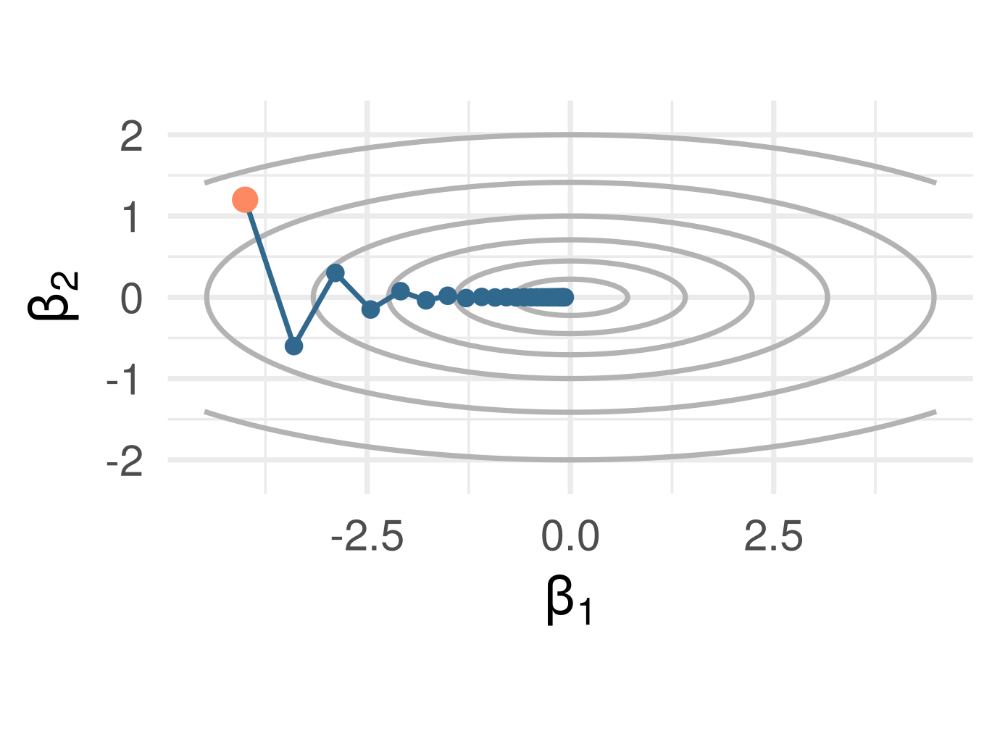
Week 4: optimization and model fitting
LSE
Part 1: fitting logistic regression
Part 2: gradient descent
Part 3: gradient diagnostics
Part 4: stochastic gradient descent
Part 5: when to stop iterating?
Week 2: least squares has a formula for \(\hat\beta\), and \(\hat\beta\) solves the normal equations. Week 3: logistic regression is fitted by maximum likelihood, and glm did it for us
Today’s question, in three parts: what did glm do? how can we tell whether fitting is working? should we let it finish?
Write down the normal equations from memory. Then guess: how is it different for logistic regression?
How do we estimate \(\beta\)? Maximum likelihood:
\[ \text{maximize } L(\beta ; \mathbf y | \mathbf X) = \prod_{i=1}^n L(\beta ; y_i | \mathbf x_i) \] (assuming the data is i.i.d.)
Maximum likelihood (Fisher, 1912–1922): choose the parameter that makes the observed data most probable. We maximize the log-likelihood because a product of \(n\) small numbers underflows and a sum differentiates term by term; log is increasing, so the maximizer is the same. Least squares is a log-likelihood: for \(y_i \sim N(\mathbf x_i^T\beta, \sigma^2)\) it is \(-\frac{1}{2\sigma^2}\sum_i (y_i - \mathbf x_i^T\beta)^2 + \text{const}\). In glm, family names the distribution whose likelihood is maximized: gaussian is lm, binomial is logistic regression.
Next slide: a bit of mathematics
Each factor is a Bernoulli (binomial, one trial) probability, \(P(y_i \mid \mathbf x_i) = p_i^{y_i}(1 - p_i)^{1 - y_i}\) with \(p_i = p(\mathbf x_i^T\beta) = 1/(1 + e^{-\mathbf x_i^T\beta})\):
\[ L(\beta ; \mathbf y | \mathbf x) = \prod_{i=1}^n \left( \frac{1}{1+e^{-x_i \beta}} \right)^{y_i} \left(1- \frac{1}{1+e^{-x_i \beta}} \right)^{1-y_i} \]
\[ \ell(\beta ; \mathbf y | \mathbf x) = \sum_{i=1}^n \left[ y_i \log \left( \frac{1}{1+e^{-x_i \beta}} \right) + (1-y_i) \log \left(1- \frac{1}{1+e^{- x_i \beta}} \right) \right] \]
\[ \frac{\partial}{\partial \beta} \ell(\beta ; \mathbf y | \mathbf x) = \sum_{i=1}^n \left[ y_i \left( \frac{x_i e^{-x_i \beta}}{1+e^{-x_i \beta}} \right) + (1-y_i) \left(\frac{-x_i}{1+e^{- x_i \beta}} \right) \right] \]
\[= \sum_{i=1}^n x_i \left[ y_i - \left(\frac{1}{1+e^{- x_i \beta}} \right) \right] = \color{#b73779}{\sum_{i=1}^n x_i [y_i - \hat p_i(\beta)]}\]
Set this equal to 0 and solve for \(\beta\). How: the rest of today
Week 2, least squares: \(\mathbf X^T(\mathbf y - \mathbf X\hat\beta) = \mathbf 0\). The residual is orthogonal to every column of \(\mathbf X\).
Logistic score equations. Stack the last slide’s rows: writing \(\mathbf p(\beta) = (\hat p_1(\beta), \ldots, \hat p_n(\beta))^T\), the MLE \(\hat\beta\) solves \[ \mathbf X^T\big(\mathbf y - \mathbf p(\hat\beta)\big) = \mathbf 0 \]
Same shape as least squares, with \(\mathbf X\hat\beta\) replaced by the fitted probabilities: the residual \(\mathbf y - \hat{\mathbf p}\) is orthogonal to every column of \(\mathbf X\)
No closed form, because \(\mathbf p(\beta)\) is not linear in \(\beta\)
Row one is the intercept. \(\sum_i (y_i - \hat p_i) = 0\): the fitted probabilities average to the observed proportion of 1s on the training rows.
The log-likelihood is concave. Differentiating once more, \[ \frac{\partial^2 \ell}{\partial\beta\,\partial\beta^T} = -\sum_{i=1}^n w_i\, x_i x_i^T, \qquad w_i = \hat p_i(\beta)\,\big(1 - \hat p_i(\beta)\big) > 0 \] Each term is minus a positive weight times \(x_i x_i^T\), a matrix that never points uphill in any direction, so the sum curves downward everywhere: the log-likelihood is concave, and any finite solution of the score equations is its global maximum
What concavity does not give: existence (week 3’s separable case has no finite solution). So how do we solve the score equations?
Exercise: using the gradient and the Hessian from the previous slides, derive the Newton-Raphson update for \(\beta\)
Newton-IRLS (equivalent) steps, \(g\) the logit link. The one line to keep: each iteration is a weighted least-squares fit around the current fit
\[ \begin{eqnarray} \hat{\mathbf p}_t & \gets & g^{-1}(\mathbf X \hat \beta_t) & \ \text{ update probs.} \\ \mathbf W_t & \gets & \text{diag}[\hat{\mathbf p}_t (1 - \hat{\mathbf p}_t)] & \ \text{ update weights} \\ \hat{\mathbf{y}}_t & \gets & g(\hat{\mathbf p}_t) + \mathbf W_t^{-1}(\mathbf y - \hat{\mathbf p}_t) & \ \text{ update response} \end{eqnarray} \]
and then update parameter estimate (LS sub-problem) \[\hat{\beta}_{t+1} \gets \arg \min_{\beta} (\hat{\mathbf{y}}_t - \mathbf X \beta)^T \mathbf W_t (\hat{\mathbf{y}}_t - \mathbf X \beta)\]
Note: larger weights on observations with \(\hat p\) closer to 1/2, i.e. the most difficult to classify (look for variations of this theme) See Section 4.4.1 of ESL
R: what you should knowDoes glm use Newton-Raphson for every family? Its fitter is IRLS, which is Fisher scoring: Newton with the expected Hessian in place of the actual one. For the default links (binomial-logit, poisson-log, gaussian-identity) the two coincide; for other links it is a close relative. lm is the one-step case
How many iterations? Usually under ten. summary() prints Number of Fisher Scoring iterations
When does it fail? Mostly when there is no finite MLE, week 3’s separable case, with coefficients growing at every iteration. The warning fitted probabilities numerically 0 or 1 occurred is a symptom to investigate, not a diagnosis: a finite MLE with a steep slope triggers it too
Why does the rest of machine learning not do this? Each step solves a \(p \times p\) system. For \(p\) in the millions that is the cost that matters; the next part avoids it
For a given loss function \(\ell(y, f(x))\) and probability model \((X,Y) \sim P\), we want to find a function \(f\) to minimize risk:
\[ \underset{f}{\text{minimize }}\ R(f) = \mathbb E_P[\ell(Y, f(X))] \]
Assume an i.i.d. sample from \(P\), focus on empirical risk minimization (ERM)
\[ \underset{f \in \mathcal F}{\text{minimize }}\ \hat R_n(f) = \frac{1}{n} \sum_{i=1}^n \ell(y_i, f(x_i)) \]
We also choose a function class \(\mathcal F\) (or parameter set), i.e. a class of functions \(f\), determining the domain of the optimization
Linear regression. Probability model: errors \(\varepsilon \sim N(0, \sigma^2)\). Loss: squared, \(\ell(y, f(\mathbf x)) = (y - f(\mathbf x))^2\). Class: \(\mathcal F = \{ f_\beta(\mathbf x) = \mathbf x^T \beta : \beta \in \mathbb R^{p+1} \}\). Algorithm: OLS, closed form (memorized yet?) \[\underset{\beta \in \mathbb R^{p+1}}{\text{minimize }} \frac{1}{n} \sum_{i=1}^n (y_i - \mathbf x_i^T \beta)^2\]
GLM. Probability model: family = binomial(), poisson(), etc. Loss: negative log-likelihood, so \(\hat R_n(\beta) = -\ell(\beta)/n\). Class: \(\{ g^{-1}(\mathbf x^T \beta) : \beta \in \mathbb R^{p+1} \}\), link \(g\) fixed. Algorithm: ERM (here also MLE), usually by an iterative algorithm \[
\underset{\beta \in \mathbb R^{p+1}}{\text{minimize }} -\frac{1}{n} \sum_{i=1}^n \log L(\beta ; y_i | \mathbf x_i)
\]
Downside of Newton-Raphson: requires second derivatives, including inverting the \(p \times p\) Hessian matrix when optimizing over \(p > 1\) parameters
If \(p\) is large, second-order optimization methods like Newton’s are very costly
First order methods only require computing the \(p \times 1\) gradient vector
Recall that the gradient is a vector in the direction of steepest increase in the parameter space
i.e. skiing as fast as possible. Notation: the objective is the empirical risk \(\hat R_n(\beta)\), and \(t\) counts steps
Start at an initial point \(\beta_0\)
For step \(t = 1, \ldots\)
Compute \(\mathbf d_t = \nabla \hat R_n(\beta_{t-1}) \color{#b73779}{\text{ (gradient)}}\)
Update \(\beta_{t} = \beta_{t-1} - \gamma_t \mathbf d_t\)
Until some convergence criteria is satisfied
Where the step size \(\gamma_t > 0\) is made small enough to not “overshoot” and increase the loss, i.e. the loss only decreases

The valley: \(f(\beta) = \tfrac12(\beta_1^2 + 10\beta_2^2)\), ten times steeper across than along. Gradient descent from the orange point, \(\gamma = 0.15\)
A few zigzags across, then a crawl along
The valley, same start, three step sizes: \(\gamma = 0.05\), \(\gamma = 0.18\), \(\gamma = 0.21\). For each, commit: converges, converges slowly, or diverges?
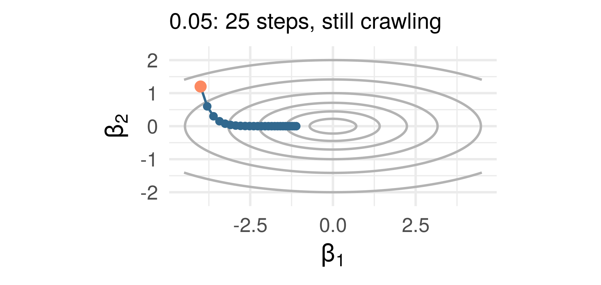
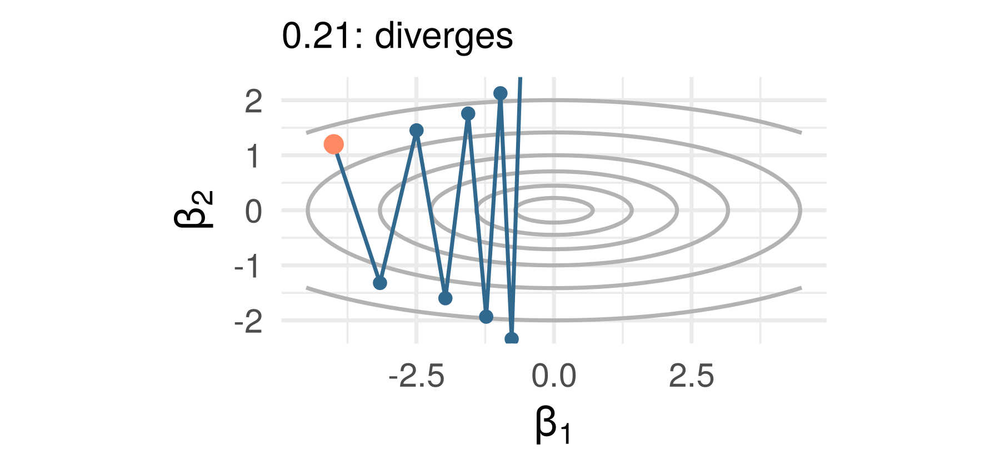
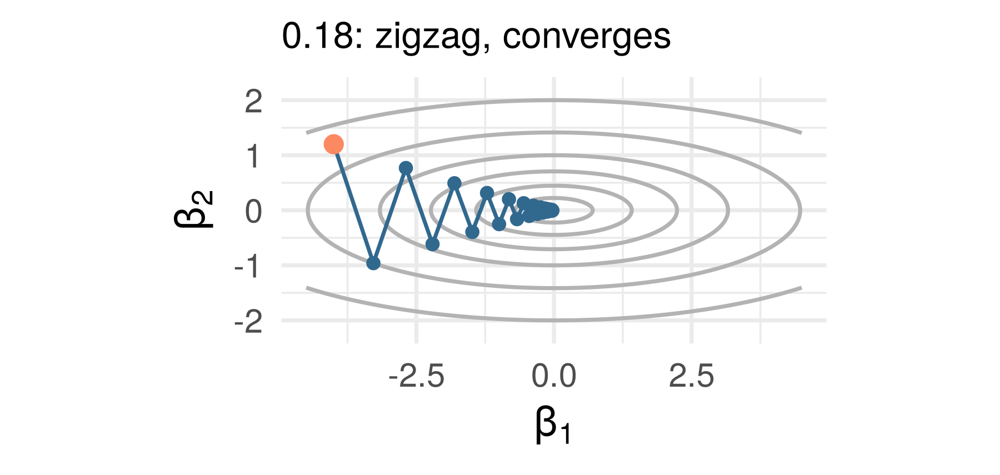
Across the valley the update multiplies \(\beta_2\) by \(1 - 10\gamma\): \(0.5\), \(-0.8\), \(-1.1\)
The largest curvature sets the largest safe step; the smallest sets how long it takes
One direction with curvature \(a > 0\): \(f(\beta) = \tfrac12 a\beta^2\), \(\nabla f = a\beta\), so
\[ \beta_{t+1} = \beta_t - \gamma a\beta_t = (1 - \gamma a)\,\beta_t, \qquad \beta_t = (1 - \gamma a)^t \beta_0 \]
Converges iff \(|1 - \gamma a| < 1\), i.e. \(0 < \gamma < 2/a\). The step \(\gamma = 1/a\) lands in one move
Several directions with curvatures \(a_1 \ge \dots \ge a_p > 0\), one step size for all of them: \(\gamma < 2/a_1\) to converge, and the slowest direction shrinks like \(\max_j |1 - \gamma a_j|^t\), which for \(\gamma \le 1/a_1\) is \((1 - \gamma a_p)^t\)
The largest curvature sets the safe step; the ratio \(a_1/a_p\), the shape of the valley, sets the speed (a direction with \(a_j = 0\), as in least squares with \(p > n\), never moves). For least squares, \(\hat R_n(\beta) = \frac1n\|\mathbf y - \mathbf X\beta\|^2\), the \(a_j\) are the eigenvalues of \(2\mathbf X^T\mathbf X/n\)
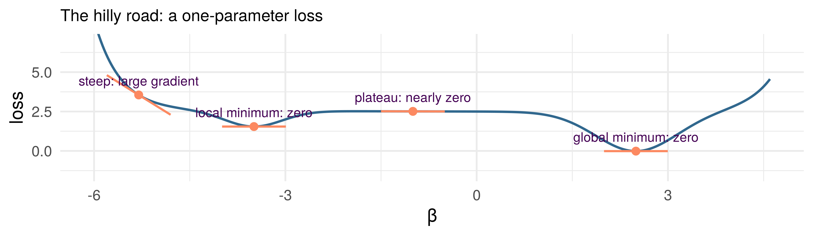
Your loss has stopped falling. Which of the four places are you at, and how would you tell?
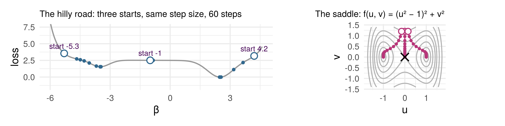
The saddle: compute the gradient at \((0, 0)\); is it a minimum? One of the three starts is \((0, 1.2)\): where does its path end, and why does it never leave?
Where you start decides where you end. Least squares and logistic regression have one valley (convex); most of what comes after week 7 does not
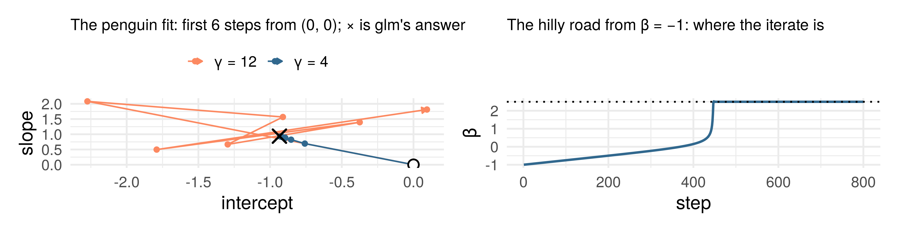
Too big a step (\(\gamma = 12 > 2/L = 8\)): the iterates overshoot and bounce. Too small a gradient (the plateau, about \(0.01\)): the iterate creeps for hundreds of steps, then moves all at once
Named, not derived: in a deep network the chain rule multiplies derivatives across layers, and the product can be enormous or negligible, exploding and vanishing gradients
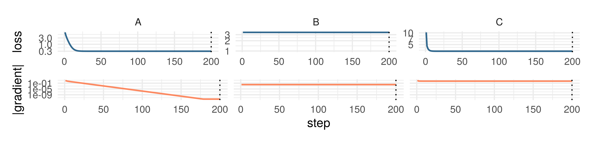
Three runs, 200 steps, log scales: training loss on top, gradient norm \(\|\nabla \hat R_n(\beta_t)\|\) below. One has converged, one is on a plateau, one has a step size that shrank to nothing. Which is which?
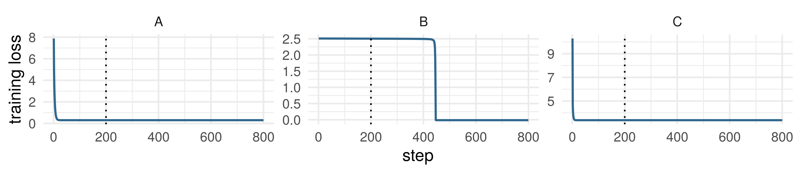
A, the valley: converged. B, the hilly road: the plateau, then the drop at step 445. C, the valley with steps \(0.3 \cdot 0.6^t\): stopped short. The training loss could not tell them apart; the gradient norm could
Taylor, to second order, with \(H = \nabla^2 f(x)\) the Hessian: for a smooth \(f\) and a small move \(\delta\), \(f(x + \delta) \approx f(x) + \nabla f(x)^T\delta + \tfrac12\,\delta^T H\,\delta\).
What decides whether a step helps is how fast the gradient changes along it. Take the step \(\delta = -\gamma\nabla f(x)\): \[ f(x - \gamma\nabla f(x)) \approx f(x) \;\underbrace{-\; \gamma\,\|\nabla f(x)\|^2}_{\text{always down}} \;\underbrace{+\; \tfrac12\gamma^2\, \nabla f(x)^T H\, \nabla f(x)}_{\text{the curvature pushes back}} \]
In the quadratic case the curvature was a fixed number \(a\). On the saddle it is \(+8\) at the two minima and \(-4\) at the saddle point; on the hilly road’s plateau it is about \(0\)
If the curvature in every direction is at most \(L\) in size, the push-back is at most \(\tfrac12 L\gamma^2\|\nabla f(x)\|^2\), and then \[ f(x - \gamma\nabla f(x)) \lesssim f(x) - \gamma\underbrace{\big(1 - \tfrac12 L\gamma\big)}_{> 0 \text{ for } \gamma < 2/L}\|\nabla f(x)\|^2 \] The bound is best at \(\gamma = 1/L\): the quadratic case’s rule, in general
To make it a theorem, say “curvature at most \(L\)” about the gradient: Assumption. \(\nabla f\) is \(L\)-Lipschitz for some \(L > 0\): \(\|\nabla f(x) - \nabla f(y)\| \le L\,\|x - y\|\) for all \(x, y\)
A quadratic with curvatures \(a_j\) has \(L = \max_j |a_j|\) (the valley: 10); least squares, \(L = 2\lambda_{\max}(\mathbf X^T\mathbf X)/n\); the saddle has no single \(L\) (curvature \(12u^2 - 4\) in \(u\))
Descent lemma. If \(\nabla f\) is \(L\)-Lipschitz, then for every \(x\) \[ f\!\left(x - \tfrac1L\nabla f(x)\right) \le f(x) - \frac{\|\nabla f(x)\|^2}{2L} \] Every step of size \(1/L\) decreases \(f\) by at least the squared gradient over \(2L\) (strictly, unless \(\nabla f(x) = 0\)).
The one guarantee, and its price. It says: no convexity needed; each step helps, more where the gradient is large. It does not say the steps converge (on \(f(x) = -x\) they walk off forever); if they do, the limit is a stationary point, any of the landscape’s. A small gradient is not arrival: the next step gains little, which is the plateau
Proof: integrate the gradient along the step, and let the Lipschitz bound do what the curvature bound did
Write \(v = y - x\) for the step, so that \(y = x - \gamma\nabla f(x)\) means \(v = -\gamma\nabla f(x)\), and \(x_t = x + tv\) for the point a fraction \(t\) of the way along it, so that \(\|x_t - x\| = t\|v\|\)
\[ \begin{alignedat}{2} f(y) - f(x) &= \int_0^1 \nabla f(x_t)^T v\, dt &\quad& \class{fragment}{\color{gray}\small\text{(a) along the step}} \\ &\class{fragment}{{}= \nabla f(x)^T v + \int_0^1 \big[\nabla f(x_t) - \nabla f(x)\big]^T v\, dt} && \class{fragment}{\color{gray}\small\text{(b) add and subtract}} \\ &\class{fragment}{{}\le \nabla f(x)^T v + \int_0^1 \|\nabla f(x_t) - \nabla f(x)\|\,\|v\|\, dt} && \class{fragment}{\color{gray}\small\text{(c) Cauchy-Schwarz}} \\ &\class{fragment}{{}\le \nabla f(x)^T v + \int_0^1 L\,t\,\|v\|^2\, dt} && \class{fragment}{\color{gray}\small\text{(d) Lipschitz}} \end{alignedat} \]
\[ \begin{alignedat}{2} f(y) - f(x) &\le \nabla f(x)^T v + \int_0^1 L\,t\,\|v\|^2\, dt &\quad& \\ &= \nabla f(x)^T v + \tfrac{L}{2}\|v\|^2 && {\color{gray}\small\text{(e) } \textstyle\int_0^1 t\, dt = \tfrac12} \\ &= -\gamma\|\nabla f(x)\|^2 + \tfrac{L}{2}\gamma^2\|\nabla f(x)\|^2 && {\color{gray}\small\text{(f) } v = -\gamma\nabla f(x)} \\ &= -\gamma\big(1 - \tfrac12 L\gamma\big)\|\nabla f(x)\|^2 && {\color{gray}\small\text{(g) collect}} \end{alignedat} \]
At \(\gamma = 1/L\) the right-hand side is \(-\|\nabla f(x)\|^2/2L\), which is the lemma. \(\blacksquare\)
For any \(0 < \gamma < 2/L\) the right-hand side is \(\le 0\), and \(< 0\) unless \(\nabla f(x) = 0\): every such step decreases \(f\) until the gradient vanishes, and the heuristic’s bound was right
Second-order methods invert the \(p \times p\) Hessian; first-order methods compute the \(p \times 1\) gradient. For a linear model or a GLM, where one row’s gradient costs about \(p\) operations:
| Operations | Once or per step? | |
|---|---|---|
| Least-squares formula \((\mathbf X^T\mathbf X)^{-1}\mathbf X^T\mathbf y\) | about \(np^2 + p^3\) | once |
| One gradient-descent step | about \(np\) | per step |
| One step on a random batch of \(b\) rows | about \(bp\) | per step |
\(n = 1{,}200{,}000\) images, \(p = 60{,}000{,}000\) parameters. If one image’s gradient cost about \(p\) operations, roughly how many is one full gradient? And one step on a batch of 128?
Pick one row \(I\) uniformly at random from \(\{1, \ldots, n\}\) and use its gradient \(\nabla\ell_I(\beta)\) in place of the average over all \(n\) rows. Commit: is it biased for the full gradient \(\nabla\hat R_n(\beta)\), yes or no? And does the descent lemma’s guarantee carry over to a step along it?
With the data and \(\beta\) held fixed, only \(I\) is random, and by linearity of \(\nabla\), \(\mathbb E\) and \(\sum\), \[ \mathbb E_I\big[\nabla\ell_I(\beta)\big] = \sum_{i=1}^n \frac1n\,\nabla\ell_i(\beta) = \nabla\hat R_n(\beta) \]
Unbiased, whatever the data are. A batch of \(b\) rows drawn independently with replacement averages \(b\) such gradients: still unbiased, with variance \(\sigma^2(\beta)/b\), where \(\sigma^2(\beta)\) is the spread of the single-row gradients
Compute update using one randomly sampled observation, or a randomly sampled subset (“mini-batch SGD”). Correct on average, cheap, and not guaranteed to decrease the training loss on any one step: the descent lemma is about the full gradient
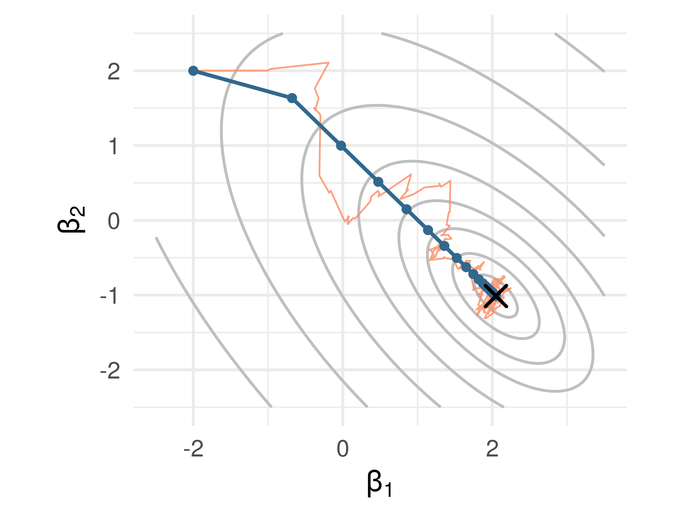
Simulated least squares, \(n = 200\), two inputs; \(\times\) is the answer
Blue: 30 full gradient steps, \(6{,}000\) row-gradients. Orange: 600 single-row steps, \(600\) row-gradients, step \(0.05/(1 + t/100)\)
A tenth of the work, and it never sits still. The step must shrink, but not so fast that it stops short like panel C (Robbins and Monro, 1951)
60,000,000
parameters in the network described in the paper, fitted in five to six days on two gaming graphics cards by stochastic gradient descent, on a loss with every feature of part 3
The winning entry, an ensemble of seven such networks, cut the ImageNet top-5 test error to 15.3%, against 26.2% for the next best. Nobody solved an equation, and no theorem said the descent would find anything good
Krizhevsky, Sutskever and Hinton, “ImageNet classification with deep convolutional neural networks”, NeurIPS 2012
e.g. the more steps of (stochastic) gradient descent used in combination with a flexible function class
e.g. the more steps of forward stepwise (adding more predictor variables)
Idea: control model complexity by stopping the algorithm before convergence
This is early stopping – we’ll come back to it later
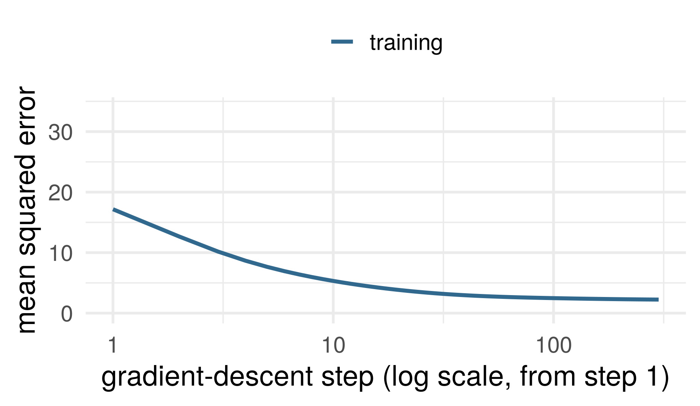
The wide regression: simulated least squares, \(n = 80\), \(p = 60\), noise sd 3, from \(\beta_0 = \mathbf 0\) with step \(1/2L\)
The training error, the number the algorithm sees, falls at every step and is still falling at 300
You may stop the algorithm at any step. Which one, and why?
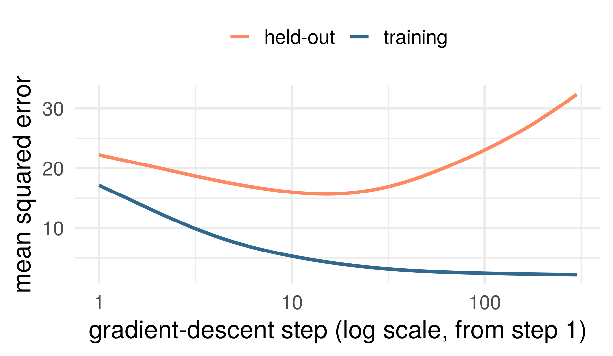
The wide regression scored on 2,000 new rows from the same model: the held-out error falls, turns at step 15, and ends far above its minimum
Every diagnostic in part 3 watched the training loss, and every one said “keep going”. Tracking the training loss is not tracking the loss you care about. Next week: by how much it lies
The number of steps is a tuning parameter, like \(k\) or \(d\); week 7 writes the penalty down, \(\hat R_n(\beta) + \lambda\|\beta\|^2\)
Three functions. \(f^\star = \arg\min_f R(f)\): the best of all (squared loss: week 2’s conditional mean). \(f_{\mathcal F} = \arg\min_{f \in \mathcal F} R(f)\): the best in the class, fixed once \(\mathcal F\) is. \(\hat f = \arg\min_{f \in \mathcal F} \hat R_n(f)\): what the data give, random
Bias–variance decomposition, ERM form. Both underbraced terms are \(\ge 0\): \[ R(\hat f) = R(f^\star) + \underbrace{\big[R(\hat f) - R(f_{\mathcal F})\big]}_{\text{estimation}} + \underbrace{\big[R(f_{\mathcal F}) - R(f^\star)\big]}_{\text{approximation}} \]
Proof: exercise 2, two lines. The class was chosen before the data, and so was the approximation error; the estimation error is the sample’s (and can hold bias as well as variance). The same trade-off as week 1’s, for any method that minimizes over a class. Next week starts here
No free lunch (stated). No method has lower error than every other on every distribution. Binary classification, 0–1 loss: for any learning method and any training size \(n\), on a domain with at least \(2n\) points there is a distribution for which a perfect predictor exists and the method’s expected error (over training samples) is at least \(1/4\)
What it says: choosing a method is an assumption about the world; the ERM form shows where one such assumption enters, the class \(\mathcal F\) chosen before the data. What it does not say: that methods are equally good on the problems we meet, or that an assumption is a flaw
In the week 1 seminar a line and \(k\) nearest neighbors often scored within a standard error of each other on gapminder. A fact about the methods, or about the data?
Each small step helps when curvature is bounded; where it ends, and whether it has ended, the guarantee does not say
Every diagnostic today watched the training loss. A lower training loss is numerical progress; whether it is a better model is a different question
Maybe the most important part! Next lecture
ST310 Machine Learning